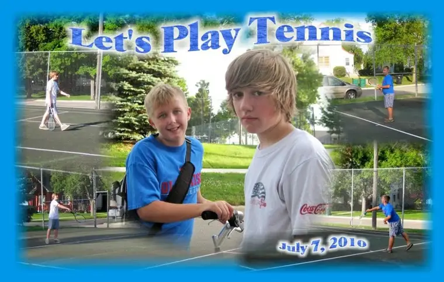

{kind=link}

The cousins meet up for a tennis duelWell, July is slipping past at a mighty hurried rate, but summer hasn’t gotten away completely just yet. Our oldest son remains at his paternal grandparents’ lake town, and today, we brought our youngest daughter to Jamestown to drop her off with my parents, who brought her back to Bismarck with them. Tomorrow, she’ll leave on her first plane ride, to the West Coast with my mother (Grandma Jane).
For the past days, we’ve been busy collecting everything she would need for her trip (including an umbrella — it’s Washington, after all). Among the most important items aside from the umbrella were a journal, her new digital camera and a Rosary. The latter is always helpful to have on plane rides; something tangible to grab during a moment of anxiety to offer up a quick prayer for safety and solace. I’ve always been offered reassurance by having Rosary beads in hand on flights, and I think the idea gave her some extra reassurance as well. I mentioned it last night and she came searching for it this morning.
I’m proud of her for packing everything herself (with help from me on the lists of items), and very excited for her. Wish I could be a mouse in her suitcase, but it’s such a blessing that she has this opportunity, just as her older siblings have in years past and her younger brothers will in years to come, God willing. And part of the deal is that she’ll be away from all of us, able to enjoy a new part of the world on her own, with her grandmother’s gentle guidance.
I’m also popping on here during my “gone fishing” summertime break to offer the schedule for tomorrow’s Real Presence Live radio show, which I’ll be hosting from 9 to 11 a.m. at the Moorhead studio. For those interested in listening online, you can go here. Locals can catch it on 1280 AM Moorhead-Fargo or 1370 Grand Forks.
9 a.m., Sue Goehring on an upcoming Cursillo Campout event
9:15 a.m., Mary Olson, St. James Basilica, Communion of Saints event this weekend (Sunday, July 25) in Jamestown
9:30 a.m., freelance writer, editor and award-winning columnist Christina Capecchi on one of her latest projects, Tobias magazine, and her recent trip to the Holy Land
10 a.m., Paul Lier, Director of Stewardship and Development, Diocese of Fargo, on the Bishop’s Charity Golf Tournament
10:30 a.m., Patti Maguire Armstrong, mother of ten, on her books/life as an author-mother in Bismarck
Perhaps if I’m lucky, I’ll learn that you were among our morning listeners.
Peace to all in the week ahead!